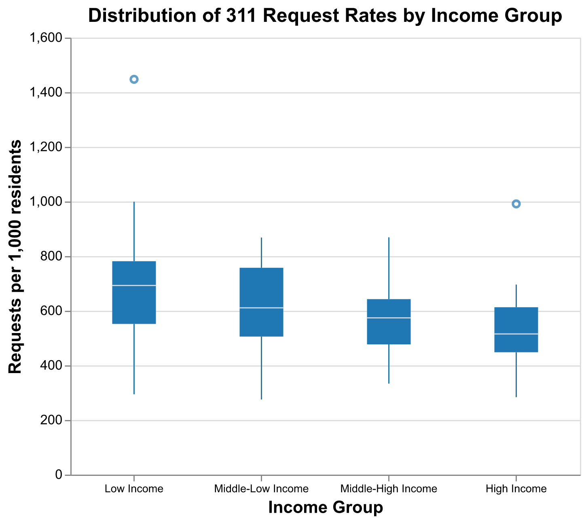
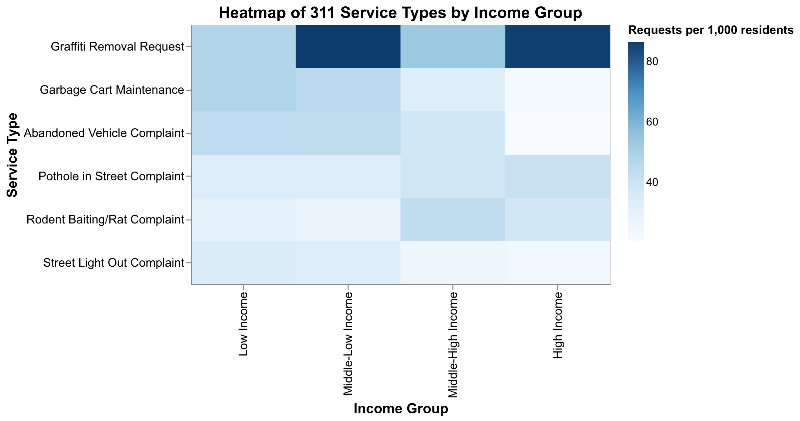

Service Request and Delivery: Evidence from 311 System in Chicago
PPHA 30538 Data Analytics and Visualization for Public Policy Final Project
Context and Motivation
Chicago exhibits substantial variation in median household income across neighborhoods. Public service delivery, such as street maintenance and pothole repairs, may also vary across space, raising concerns about whether municipal services are distributed equitably. The City of Chicago’s 311 system provides a centralized platform through which residents submit service requests. These data offer a unique opportunity to evaluate how the city responds to neighborhood needs.
Research Question
Are neighborhood income differences in Chicago associated with disparities in 311 service demand and response times across Community Areas?
Secondary research questions:
- Do service demand levels differ systematically across neighborhood income groups?
- Do the types of 311 requests vary by neighborhood income level?
- Is service response time associated with neighborhood income?
Data and Approach
Data Sources
- 311 Service Requests: This dataset includes service requests created after the launch of the new 311 system on 12/18/2018 and some records from the previous system. Source: City of Chicago Data Portal (CHI311).
- American Community Survey (ACS) 5-Year Data by Community Area: This dataset provides neighborhood-level socioeconomic indicators (by Community Area level) from the 2019-2023 ACS 5-Year Estimates. Source: U.S. Census Bureau.
- Chicago Community Area Geoboundaries: This dataset was used for map-based analysis and dashboard geography. Source: City of Chicago Data Portal.
Data Retrieval: Saturday, February 14, 4:17 PM.
Data Preparation
The downloaded 311 dataset includes records submitted between January 1, 2023 and December 31, 2024. We filtered observations to keep valid Community Area identifiers and relevant fields (creation date, completion date, request type, service status, and geography information). To measure service efficiency, we constructed response time as completion date minus creation date. Observations with missing completion dates were excluded from response-time calculations.
The 311 data were aggregated at the Community Area level to produce:
- Total service requests
- Average response time
We normalized demand by neighborhood population using ACS, calculating requests per 1,000 residents, and merged the 311 aggregates with ACS socioeconomic indicators.
Exclusions and reasons in analysis and dashboard:
- COMMUNITY AREA OHARE: excluded because it is not directly comparable to residential community areas.
- COMMUNITY AREA FOREST GLEN: excluded from response-time mapping because it behaves as an outlier that compresses map variation for other areas.
- SERVICE REQUEST “311 INFORMATION ONLY CALL”: excluded because it is not an actionable service-delivery category.
Key Findings
Finding 1: Service Demand by Income Group (Boxplot)
This first finding responds to Research Question 1. The boxplot indicates that request intensity is not evenly distributed across income groups, with visible differences in medians and dispersion. The distributional spread also suggests that even within the same income group, neighborhoods can experience very different levels of service demand pressure.
Finding 2: Service-Type Composition by Income Group (Heatmap)

This second finding responds to Research Questions 2. The heatmap shows that demand patterns vary by service category and are not uniform across income groups. Different concentration patterns across cells support the interpretation that neighborhood context matters for what residents request.
Streamlit Dashboard
Interactive app: Link to dashboard
The first graphic answers the Research Questions 3 and shows the relationship between neighborhood income and 311 service response time across Community Areas by type of service.
We observe both positive and negative trends depending on the service type selected, suggesting that disparities are not uniform across categories. For some service types, higher-income areas show shorter response times, indicating a potential efficiency advantage. In other cases, the contrary occurs.
The interactive feature allows users to select specific service types, enabling direct comparison across Community Areas and revealing how patterns shift depending on the issue analyzed.
The dashboard also includes two maps:
- Requests - volume.
- Service time - average (different from the graphic because here it is an average of all service types).
Policy Implications
These findings suggest that 311 data can serve as a practical management tool for improving municipal service delivery. By tracking delays, identifying recurring issues, and monitoring service backlogs in real time, the City can redesign workflows, implement preventive maintenance strategies, and make faster operational adjustments. In addition, incorporating 311 performance metrics into budgeting decisions can help align municipal spending with demonstrated service needs and measurable outcomes, strengthening overall efficiency and accountability.